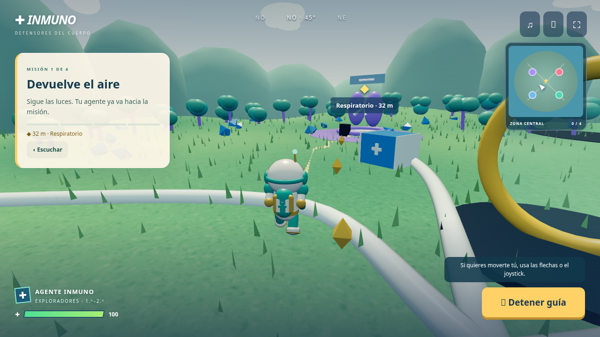
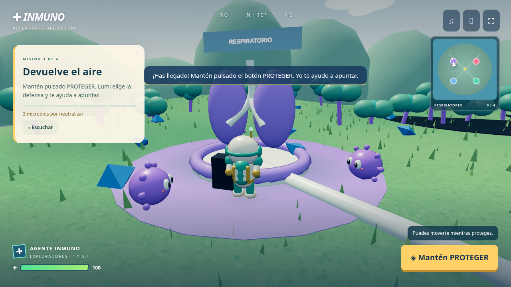
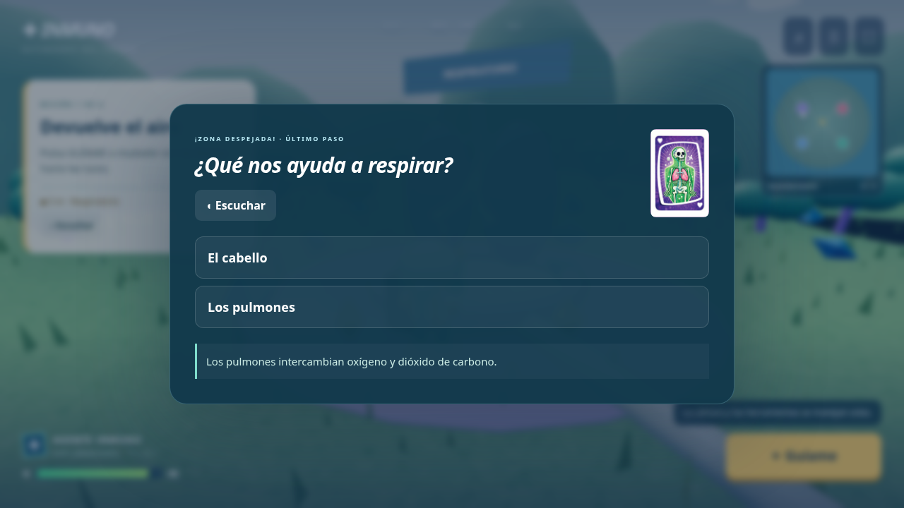
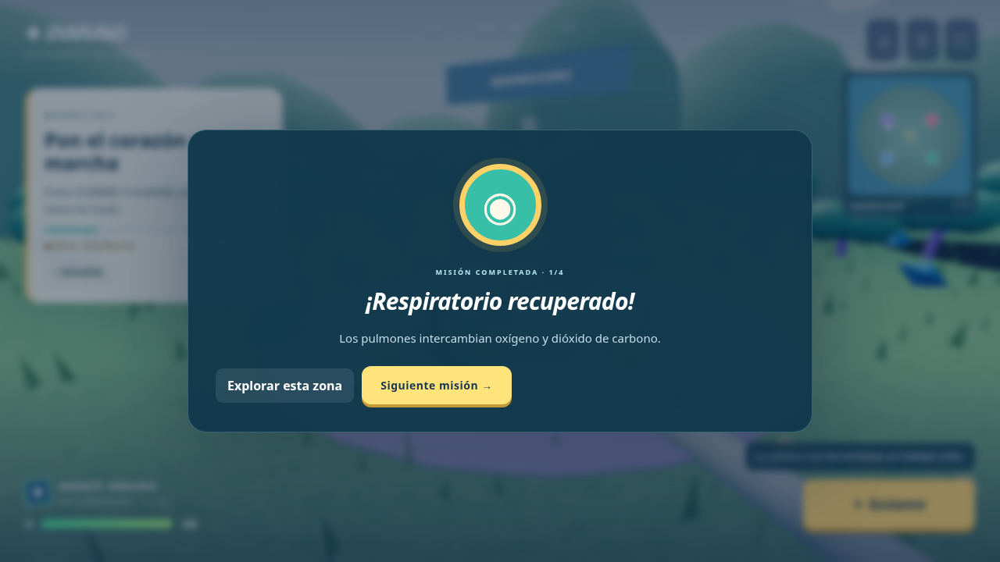

TU CUERPO TE NECESITA
Un pequeño héroe. Una gran misión.
Recupera cuatro sistemas con la ayuda de Lumi.
PASO 1 · LLEGA A LA MISIÓN
Sigue las luces.
Pulsa Guíame o usa las flechas y el joystick.

PASO 2 · PROTEGE LA ZONA
Mantén Proteger.
Tu agente apunta y elige la defensa adecuada.
Virus → AnticuerpoBacterias → Antibiótico

PASO 3 · DESCUBRE Y APRENDE
Responde y gana tu insignia.
Si te equivocas, tienes una pista y puedes repetir.

TU AVENTURA CONTINÚA
Una misión cada vez.
Pulmones, corazón, cerebro y defensas. ¡Empieza!
¡Bienvenido a Inmuno! Eres un pequeño agente dentro del cuerpo. Tu
misión es recuperar cuatro sistemas.
Primero, pulsa Guíame. Tu agente seguirá el camino de luces hasta
los pulmones. También puedes moverte con las flechas o el joystick.
Después, mantén pulsado Proteger. Lumi elegirá la defensa correcta y te
ayudará a apuntar. Los anticuerpos actúan contra virus. Los antibióticos actúan
contra bacterias.
Cuando la zona esté limpia, responde una pregunta corta. Si te
equivocas, puedes probar otra vez. ¡Así recuperas el sistema y ganas
tu insignia!
Repite la aventura en el corazón, el cerebro y la fortaleza
de las defensas. Recupera las cuatro zonas y protege el núcleo.
¡Lumi te acompañará paso a paso!